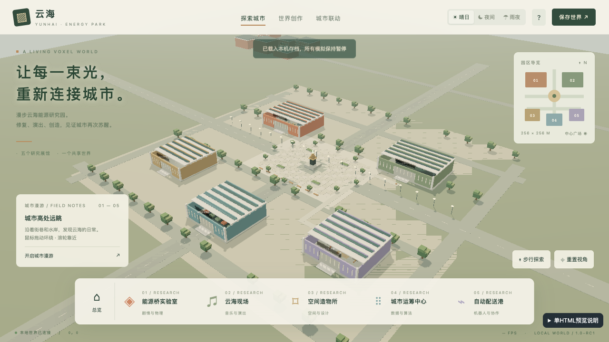
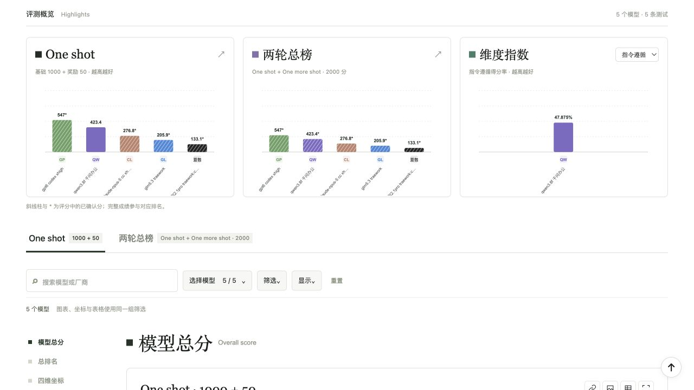

希望观察的能力
首次交付的完整性、跨模块联动、交互与状态的连续性，以及需求变化后的持续修改。
PRODUCT EXPLORATION / VOXELBENCH
以完整体素世界为载体，观察首次交付、模块联动、状态保留与后续修改，而不只看第一眼的生成效果。

现有首轮被测作品 · 模型生成作品截图不代表全部要求已通过
一个作品能否真正使用，往往要在模块相互作用、用户改过内容、再来一次需求变更之后，才看得清楚。
VoxelBench是我自主提出、借助AI实现的评测设想。它要求模型一次交付一座包含多个活动的体素世界，再在用户已有状态上完成暴雨改造。
物理桥梁、音乐演出、空间创作、规划算法与机器人配送需要能独立使用，也能发生实际联系。生成任务包括规划、实现、集成和自测，而不是逐个小功能等待追加指令。
沿用用户存档：保留自建资产、歌曲与混音位置、剧情分支、规划历史和机器人任务。在暴雨、积水和场地迁移下改造系统，不得以重建默认世界冒充迁移。
具体检查包括：削弱桥梁连接后从当前物理状态响应；演出过渡中暂停、保存并恢复；货物已交出但尚未取走时，重启后仍保持正确交接阶段。
复杂作品很难仅凭截图或一段演示判断。题面、操作步骤、检查点与固定权重将观察拆成具体任务，同时保留原始成本、时间和Token，帮助把结果与投入放在一起看。
首次交付的完整性、跨模块联动、交互与状态的连续性，以及需求变化后的持续修改。
长任务测试成本高，观感与交互判断仍可能有歧义。尚需完整样本、重复评分与一致性验证，才能讨论基准的稳定性。

现有两轮题面、评分规则、录分工作台、榜单和作品预览。当前只有5条记录，续轮尚未评分；可以展示方法与平台，不能给出完整双轮模型优劣结论。
本页城市图来自一份现有被测作品，由模型生成。王家庆提出和推进的是评测设想与平台，不将被测作品包装为本人独立开发的游戏。
基础项按固定权重计算，未评项不补零、不缩小分母。首轮基础1000加奖励50；双轮基础相加2000，不含奖励。记录中的异常或缺失消耗没有推算或调整。此前32项限定范围检查由求职助手执行。
城市截图源自本地记录9a8f9dd8的首轮预览，模型字段为“gpt6 codex xhigh”，沿用原记录命名。该截图不证明题目中的全部功能已经实现。
NEXT EXPLORATION